Aktuálna ponuka
Nehnuteľnosti, ktoré ponúkam
13 nehnuteľností na predaj a prenájom. Vyberte typ, alebo napíšte lokalitu.
13 z 13 ponúk
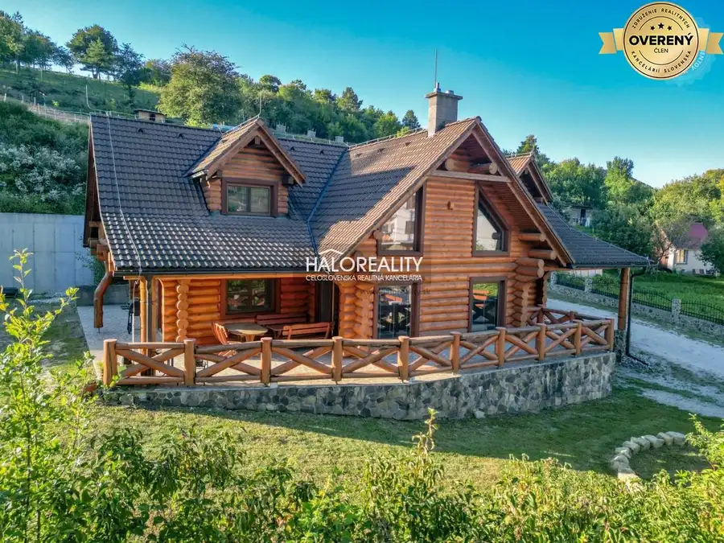
Rodinné domy9 Cena dohodouPredaj, rodinný dom Prečín, hospodárska usadlosť - N... Prečín 6-izbový1 m² Predaj jedinečnej nehnuteľnosti – RANČ s kanadským zrubom v obci Prečín, okres Považská Bystrica. Ponúkame na predaj výnimočné rodinné sídlo s…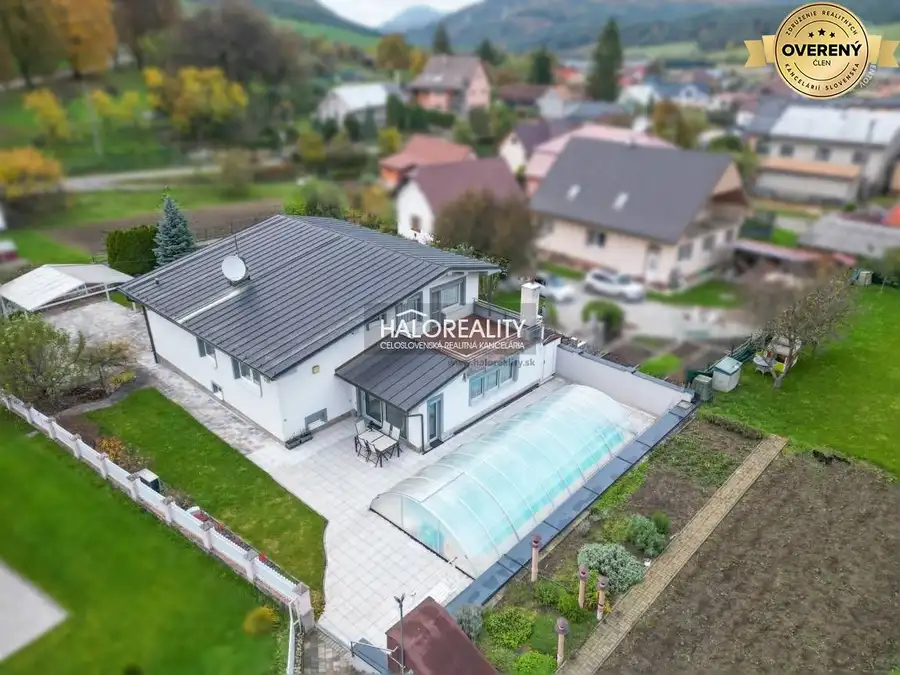
Rodinné domy9 Cena dohodouPredaj, rodinný dom s bazénom Domaniža - EXKLUZÍVNE ... Domaniža 7-izbový1 m² Ponúkame na predaj nadštandardný 7-izbový rodinný dom s luxusnými prvkami, vrátane 11-metrového krytého vyhrievaného bazéna a vyhrievaného…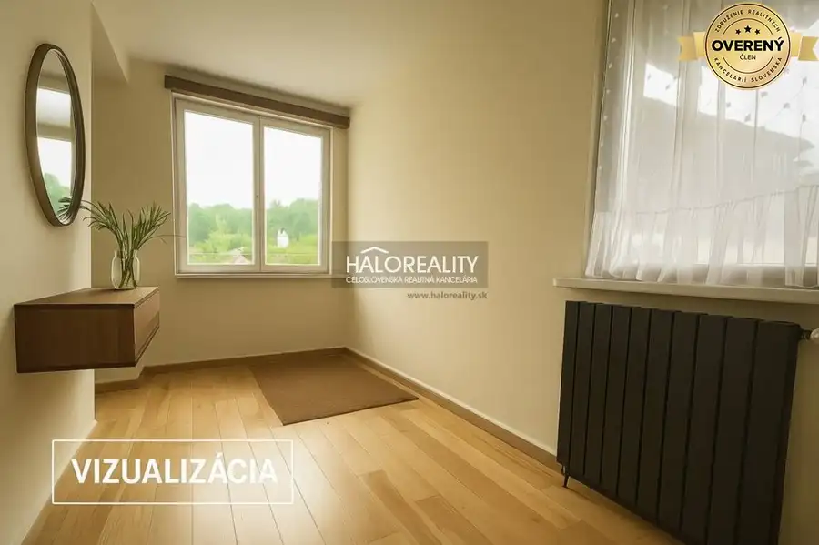
Rodinné domy9 110 000 €Predaj, rodinný dom Považská Bystrica, Milochov - ZN... Považská Bystrica 3-izbový1 m² Ponúkame na predaj priestranný jednopodlažný 3-izbový rodinný dom, nachádzajúci sa v obci Dolný Milochov (okres Považská Bystrica). Dom sa nachádza v…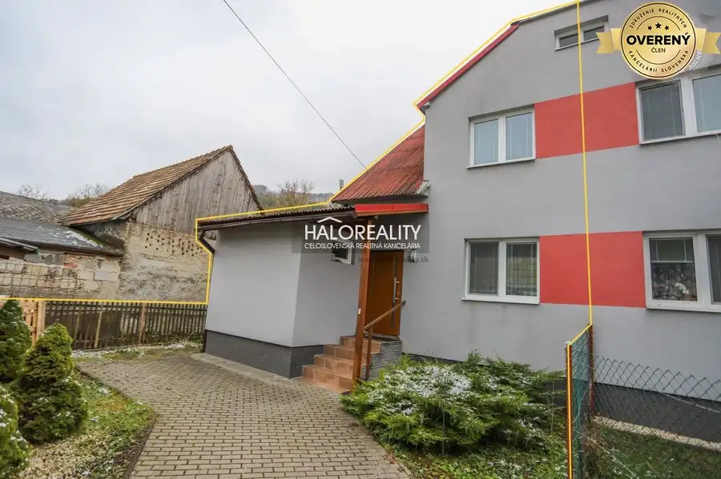
Rodinné domy9 174 900 €Predaj, rodinný dom Brvnište - ZNÍŽENÁ CENA - EXKLUZ... Brvnište 5-izbový1 m² Ponúkame na predaj pekný priestranný dvojpodlažný 5-izbový rodinný dom po rekonštrukcii s priľahlou chatkou, ktorý sa nachádza v peknej lokalite v…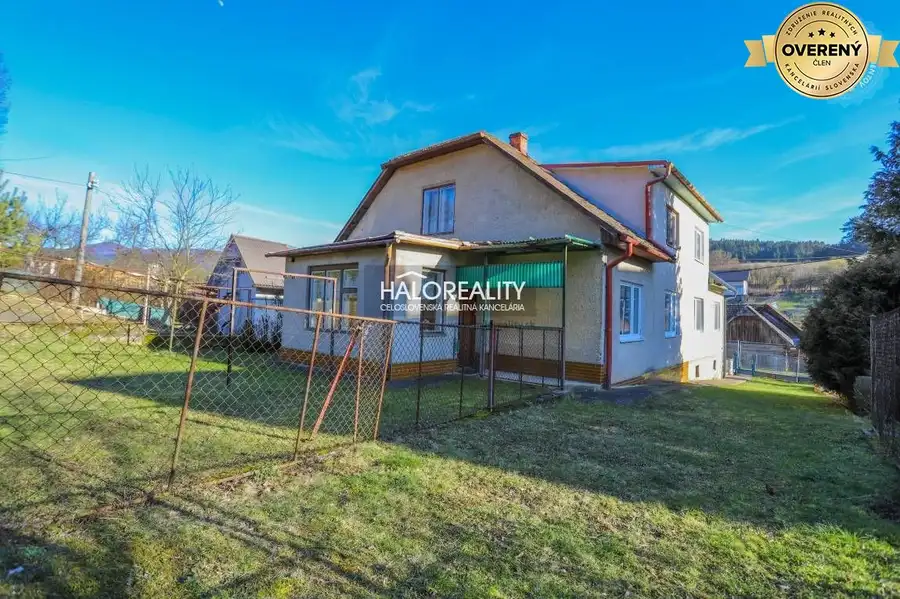
Rodinné domy9 89 000 €Predaj, rodinný dom Domaniža - EXKLUZÍVNE HALO REALITY Domaniža 4-izbový1 m² Ponúkame na predaj dvojpodlažný 4-izbový rodinný dom, ktorý sa nachádza v peknej a žiadanej lokalite na bývanie v obci Domaniža, okr. Považská…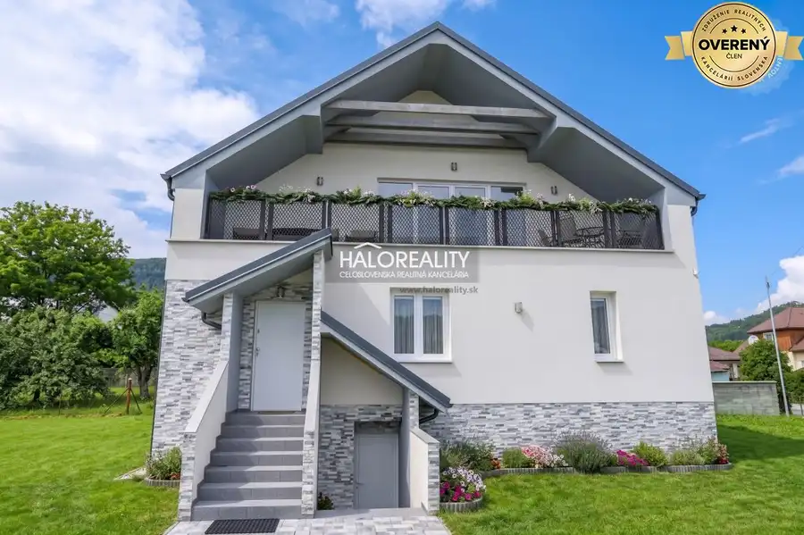
Rodinné domy9 349 900 €Predaj, rodinný dom Domaniža - EXKLUZÍVNE HALO REALITY Domaniža 6-izbový1 m² Ponúkame na predaj krásny 6-izbový rodinný dom vkusne navrhnutý v talianskom štýle, v obľúbenej lokalite na bývanie – v obci Domaniža, okres Považská…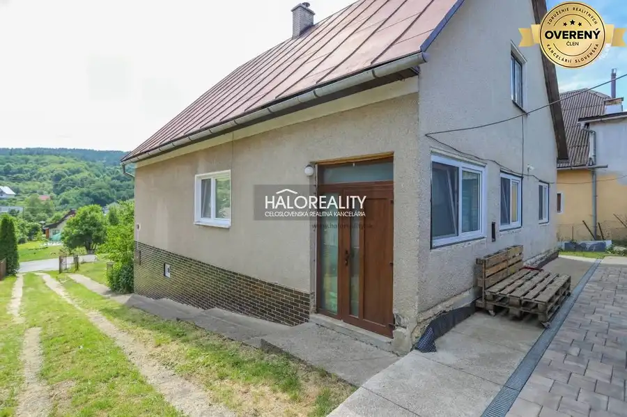
Rodinné domy9 183 000 €Predaj, rodinný dom Dolná Mariková - ZNÍŽENÁ CENA - ... Dolná Mariková 3-izbový270 m² Ponúkame na predaj priestranný 3-izbový rodinný dom (s možnosťou dorobenia ďaľších izieb) s úžitkovou plochou cca 270 m2 po čiastočnej rekonštrukcií…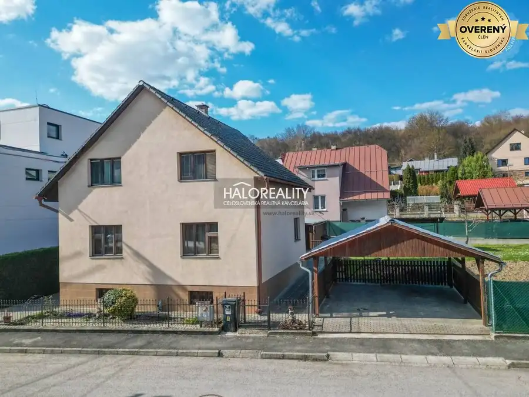
Rodinné domy9 335 000 €Predaj, rodinný dom s pekným pozemkom Považská Bystr... Považská Bystrica 5-izbový1 m² Ponúkame na predaj poctivý, dvojpodlažný 5-izbový rodinný dom v Považskej Bystrici, v obľúbenej a tichej mestskej časti Jelšové. Tento dom je…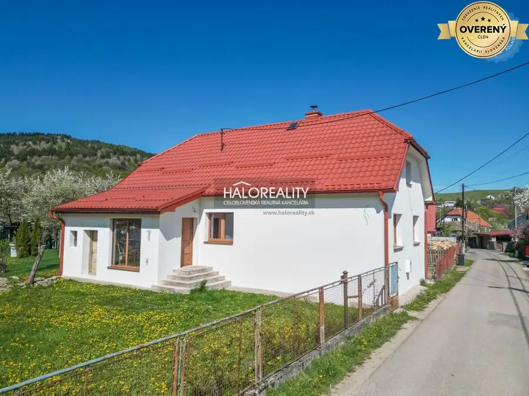
Rodinné domy9 195 000 €Predaj, štýlový rodinný dom Papradno - EXKLUZÍVNE HA... Papradno 2-izbový1 m² Ponúkame na predaj krásny kompletne zrekonštruovaný rodinný dom v obľúbenej obci Papradno, okres Považská Bystrica. Ak hľadáte bývanie, kde sa spája…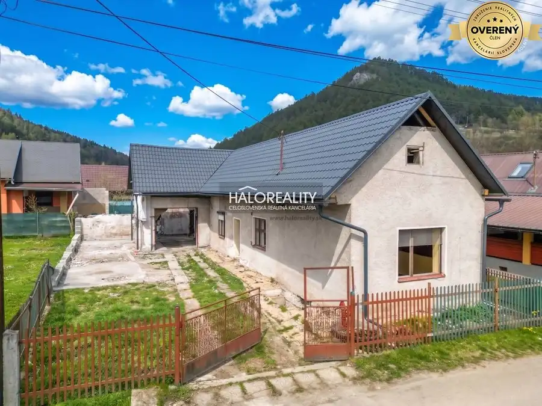
Rodinné domy9 69 000 €Predaj, rodinný dom Stupné - EXKLUZÍVNE HALO REALITY Stupné 2-izbový1 m² Ponúkame na predaj 2-izbový rodinný dom s potenciálom 4-izbového, ktorý sa nachádza v obci Stupné, okr. Považská Bystrica. Rodinný dom sa nachádza na…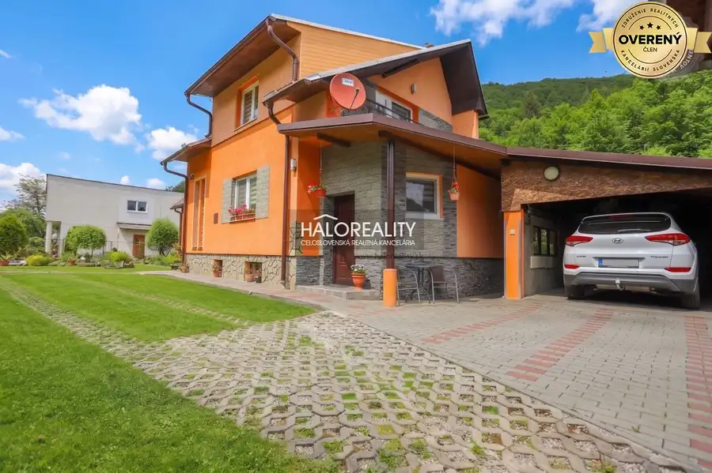
Rodinné domy9 169 000 €Predaj, rodinný dom Dolná Mariková - EXKLUZÍVNE HALO... Dolná Mariková 3-izbový1 m² Ponúkame na predaj pekný kompletne zrekonštruovaný 3-izbový rodinný dom s úžitkovou plochou cca 125 m2, ktorý sa nachádza v obci Dolná Mariková,…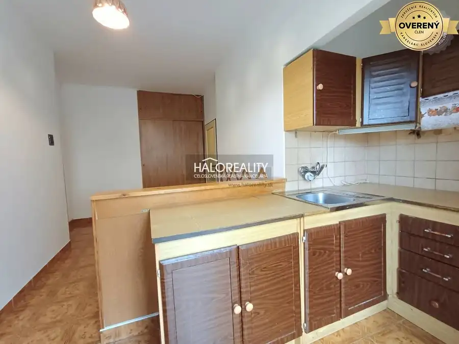
Byt9 115 000 €Predaj, dvojizbový byt Púchov, 1. mája - EXKLUZÍVNE ... Púchov 2-izbový63 m² Ponúkame na na predaj veľkometrážny, dvojizbový byt s loggiou, ktorý sa nachádza vo výbornej lokalite na skok od centra mesta - ulica 1. mája v…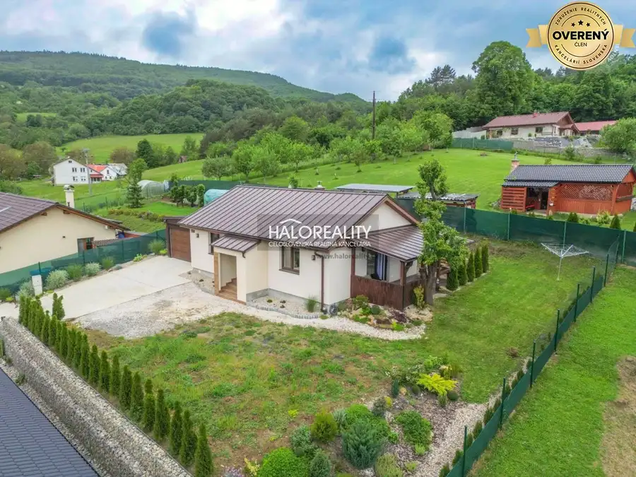
Rodinné domy9 Cena dohodouPrenájom, rodinný dom Dohňany - NOVOSTAVBA - EXKLUZÍ... Dohňany 3-izbový1 m² Ponúkame na PRENÁJOM peknú novostavbu 3-izbového bungalovu s priestrannou terasou a garážou v obci Dohňany, okres Púchov. Dom má úžitkovú plochu 90…Tomuto výberu zatiaľ nezodpovedá žiadna ponuka. Napíšte mi, čo hľadáte.